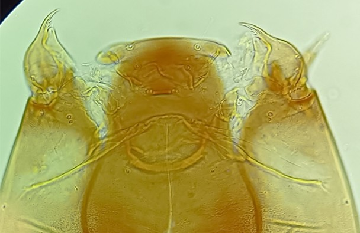
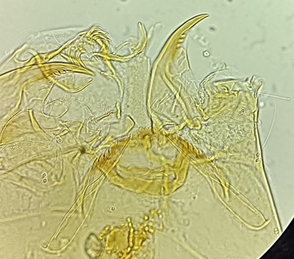

S.F. Orthocladiinae, genre Nanocladius


Plaques ventromentales fortement transverses, dents médianes et latérales très petites et difficilement discernable
Prémandibules avec 3-5 dents
Dents médianes et latérales fortes et bien visibles, plaques ventromentales en position diagonale
Prémandibules avec 1 dent apicale